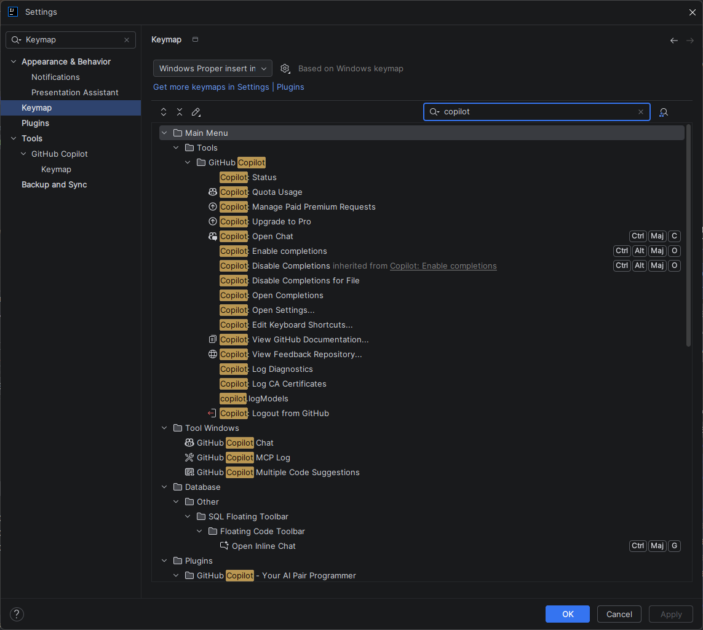
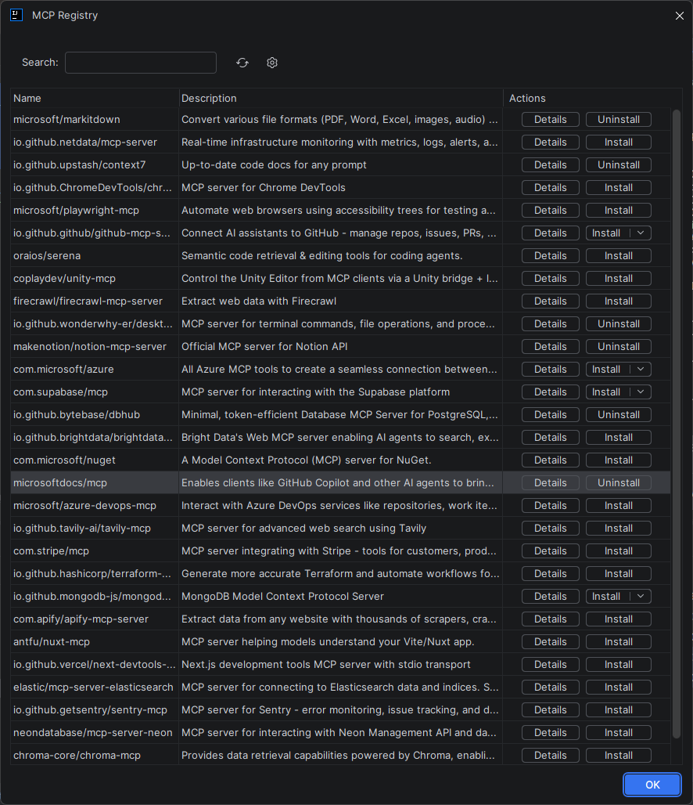

Guide de référence — GitHub Copilot sur IntelliJ IDEA¶
IntelliJ IDEA Intermédiaire
Présentation¶
Ce guide de référence rassemble toutes les informations techniques sur l'intégration de GitHub Copilot dans IntelliJ IDEA : localisation des fichiers de configuration, raccourcis clavier complets, plugins complémentaires, et personnalisation avancée.
Localisation des fichiers de configuration¶
IntelliJ IDEA stocke ses configurations dans un dossier propre à chaque version. GitHub Copilot utilise les paramètres standards du plugin, stockés dans ce répertoire.
%APPDATA%\JetBrains\IntelliJIdea<version>\
├── options\
│ └── github-copilot.xml ← Paramètres Copilot
├── plugins\
│ └── github-copilot\ ← Fichiers du plugin
└── logs\
└── idea.log ← Logs généraux (inclut Copilot)
Exemple pour IntelliJ IDEA 2024.1 :
Accès rapide aux logs
Dans IntelliJ, accédez directement au dossier de logs via Help → Show Log in Explorer/Finder/Files Manager.
Raccourcis clavier par défaut¶
Raccourcis principaux — Suggestions inline¶
| Action | Raccourci |
|---|---|
| Accepter la suggestion complète | Tab |
| Accepter mot par mot | Ctrl+Right |
| Suggestion suivante | Alt+] |
| Suggestion précédente | Alt+[ |
| Rejeter la suggestion | Esc |
| Déclencher manuellement | Alt+\ |
| Ouvrir les 10 suggestions | (non disponible nativement) |
| Action | Raccourci |
|---|---|
| Accepter la suggestion complète | Tab |
| Accepter mot par mot | Option+Right |
| Suggestion suivante | Option+] |
| Suggestion précédente | Option+[ |
| Rejeter la suggestion | Esc |
| Déclencher manuellement | Option+\ |
Raccourcis Copilot Chat¶
| Action | Raccourci |
|---|---|
| Ouvrir Copilot Chat | (panneau latéral) |
| Expliquer le code sélectionné | Clic droit → GitHub Copilot → Explain This |
| Générer des tests | Clic droit → GitHub Copilot → Generate Tests |
| Corriger le code | Clic droit → GitHub Copilot → Fix This |
| Inline Chat (dans l'éditeur) | Ctrl+I |
| Action | Raccourci |
|---|---|
| Inline Chat (dans l'éditeur) | Cmd+I |
| Expliquer le code sélectionné | Clic droit → GitHub Copilot → Explain This |
| Générer des tests | Clic droit → GitHub Copilot → Generate Tests |
| Corriger le code | Clic droit → GitHub Copilot → Fix This |
Personnaliser les raccourcis clavier¶
- Allez dans File → Settings → Keymap (Ctrl+Alt+S puis rechercher "Keymap")
- Dans la barre de recherche du Keymap, tapez "Copilot" pour filtrer toutes les actions Copilot
- Double-cliquez sur un raccourci pour le modifier
- Appuyez sur la combinaison de touches souhaitée
- Cliquez sur OK pour confirmer

Capture d'ecran : Panneau Keymap filtré sur "Copilot"Exporter votre keymap
Vous pouvez exporter votre keymap personnalisée via File → Export Settings pour la partager avec l'équipe ou la restaurer après une réinstallation.
Menu contextuel (clic droit)¶
Lorsque vous sélectionnez du code et faites un clic droit, le sous-menu GitHub Copilot propose :
| Option | Description |
|---|---|
| Explain This | Copilot explique le code sélectionné dans le Chat |
| Generate Tests | Génère des tests unitaires pour la méthode/classe sélectionnée |
| Fix This | Propose une correction pour le code problématique |
| Simplify This | Suggère une version simplifiée du code |
| Generate Docs | Génère la documentation (Javadoc, KDoc, etc.) |
Plugins complémentaires recommandés¶
Ces plugins de la suite JetBrains/Marketplace s'intègrent bien avec Copilot :
| Plugin | Utilité | Lien |
|---|---|---|
| GitHub | Intégration Pull Requests, Issues, Actions directement dans l'IDE | JetBrains Marketplace |
| SonarLint | Analyse de qualité en temps réel — complémentaire à Copilot pour la sécurité | JetBrains Marketplace |
| Conventional Commits | Aide à la rédaction des messages de commit — combinable avec Copilot | JetBrains Marketplace |
| String Manipulation | Transformations de chaînes utiles quand on travaille avec des suggestions | JetBrains Marketplace |
Éviter les conflits d'autocomplétion
Si vous utilisez d'autres plugins d'IA ou d'autocomplétion (Tabnine, Kite, AWS CodeWhisperer), ils peuvent entrer en conflit avec Copilot. Désactivez-les ou configurez leurs priorités pour éviter d'avoir deux suggestions simultanées.
Accès rapide aux paramètres Copilot¶
Depuis la barre d'état (icône Copilot en bas) : - Cliquez sur l'icône pour voir l'état (actif/inactif) - Clic droit sur l'icône → menu rapide : Enable/Disable, Open Settings, Login/Logout
Depuis le menu principal : - Tools → GitHub Copilot → accès à toutes les options
Pour les paramètres complets : Paramétrage IntelliJ
Informations de version et diagnostic¶
Pour connaître la version du plugin installée : 1. File → Settings → Plugins → Installed 2. Recherchez "GitHub Copilot" 3. La version s'affiche sous le nom du plugin
Pour accéder aux logs Copilot détaillés : voir Logs & Diagnostic
MCP Registry — Enrichir le contexte avec des serveurs MCP¶
Avancé
Qu'est-ce que MCP ?¶
Model Context Protocol (MCP) est un protocole standard qui permet d'enrichir le contexte de Copilot en connectant des serveurs MCP spécialisés. Ces serveurs donnent accès à des ressources externes (bases de données, APIs, fichiers, outils CLI, etc.) directement dans votre éditeur.
Accéder à MCP Registry dans IntelliJ¶
Pour découvrir et installer des serveurs MCP dans IntelliJ :
- Allez dans Tools → GitHub Copilot → MCP Server Registry
- Ou utilisez la barre de recherche rapide : Shift+Shift , tapez "MCP Registry"
La fenêtre MCP Registry s'affiche avec une liste de serveurs disponibles :

Serveurs MCP populaires¶
| Serveur | Utilité | Fonction |
|---|---|---|
| microsoft/markdown | Conversion de formats | Convertir fichiers (PDF, Word, Excel, images, audio) en Markdown |
| io.github.netdata/mcp-server | Monitoring | Surveillance temps-réel avec Datadog/Netdata |
| io.github.upstash/context7 | Documentation | Accès à documentation à jour pour les libraries |
| io.github.ChromeDevTools/chromedevtools | DevTools Chrome | Automatiser les tests de navigateur |
| microsoft/playwright-mcp | Test d'accessibilité | Tester l'accessibilité web avec Playwright |
| io.github.github/github-mcp-server | GitHub | Gérer repos, issues, PRs directement |
| oraios/serena | Récupération sémantique | Recherche et édition pour agents |
| firecrawl/firecrawl-mcp-server | Web scraping | Extraire données structurées du web |
| b-phoenix/govdash | Terminal CLI | Exécuter commandes et scripts |
| makenotation/notion-mcp-server | Notion API | Intégration Notion |
| com.microsoft/azure | Azure | Tous les outils Azure MCP |
| com.supabase/mcp | Supabase | Interactions avec Supabase |
| io.github.bytebase/dbhub | Database | Serveur MCP pour PostgreSQL |
Installation d'un serveur MCP¶
- Dans la fenêtre MCP Registry, cliquez sur un serveur de la liste
- Consultez la description et les prérequis affichés
- Cliquez sur le bouton "Install" ou "Add"
- IntelliJ configure automatiquement le serveur et l'active
Vérifier les serveurs MCP installés¶
Pour voir les serveurs activés et leurs statuts :
- Allez dans Tools → GitHub Copilot → MCP Server Manager
- Vous verrez la liste des serveurs avec leur statut (Active/Inactive)
- Vous pouvez activer/désactiver chacun individuellement
Utiliser un serveur MCP dans Copilot Chat¶
Une fois installé, utilisez le serveur dans le Chat IntelliJ :
- Ouvrez le Copilot Chat (panneau latéral droit ou Ctrl+I)
- Tapez
@dans le message pour voir les serveurs disponibles - Sélectionnez le serveur pour le contexte de votre question :
@markdown Convertis ce fichier PDF en markdown lisible
@github Affiche mes pull requests en attente
@context7 Quelle est la dernière version de React ?
Copilot utilisera automatiquement le serveur sélectionné pour enrichir sa réponse.
Configuration avancée¶
IntelliJ gère la configuration MCP via son système de plugins et preferences. Les paramètres avancés sont visibles dans :
File → Settings → Tools → GitHub Copilot → MCP Configuration
Ici, vous pouvez : - Activer/désactiver individuellement chaque serveur - Configurer les variables d'environnement (tokens, API keys) - Définir les priorités et timeouts - Consulter les logs de connexion de chaque serveur
Variables d'environnement
Les serveurs MCP peuvent nécessiter des tokens d'authentification (GitHub, API keys, etc.). Stockez-les dans les variables d'environnement du système :
Redémarrez IntelliJ pour que les changements prennent effet.